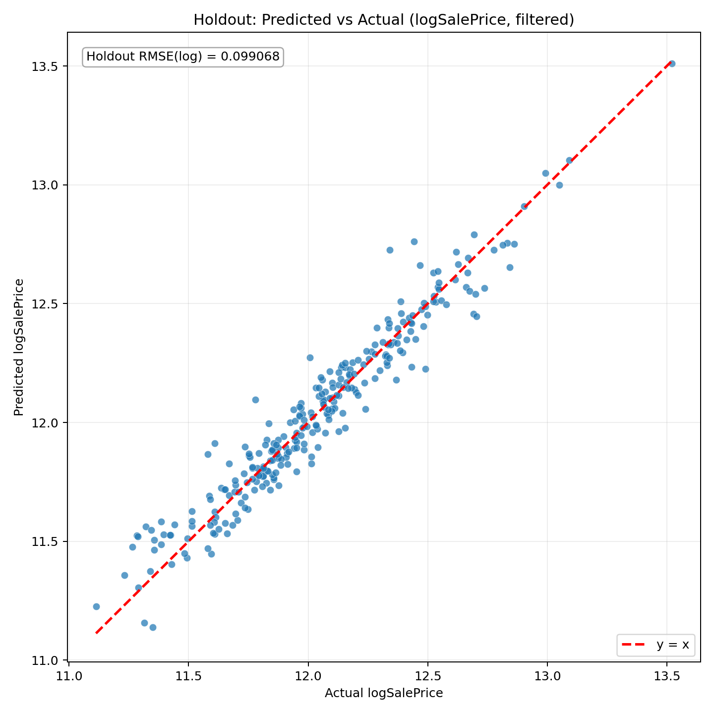

Pandoc not found. HTML is generated, and Python fallback also exports PDF.
from sklearn.compose import ColumnTransformer
from sklearn.impute import SimpleImputer
from sklearn.linear_model import LassoCV
from sklearn.pipeline import Pipeline
from sklearn.preprocessing import OneHotEncoder, StandardScaler
preprocessor = ColumnTransformer([
("num", Pipeline([
("imputer", SimpleImputer(strategy="median")),
("scaler", StandardScaler()),
]), numeric_cols),
("cat", Pipeline([
("imputer", SimpleImputer(strategy="most_frequent")),
("onehot", OneHotEncoder(handle_unknown="ignore")),
]), categorical_cols),
])
model = Pipeline([
("preprocessor", preprocessor),
("lasso", LassoCV(cv=5, random_state=42)),
])General form:
Expanded equation (Top10 coefficients only):
y_hat = 11.858684 + 0.150255 * cat__Neighborhood_Crawfor + 0.121175 * num__GrLivArea + 0.090703 * cat__Neighborhood_StoneBr - 0.089279 * cat__MasVnrType_BrkCmn - 0.083834 * cat__Neighborhood_MeadowV - 0.077165 * cat__RoofMatl_Tar&Grv + 0.070704 * num__YearBuilt + 0.070021 * cat__Exterior1st_BrkFace + 0.069353 * num__OverallQual + 0.055265 * cat__Neighborhood_SomerstTop10 absolute coefficients:
| Rank | Feature | Coefficient |
|---|---|---|
| 1 | cat__Neighborhood_Crawfor | 0.150255 |
| 2 | num__GrLivArea | 0.121175 |
| 3 | cat__Neighborhood_StoneBr | 0.090703 |
| 4 | cat__MasVnrType_BrkCmn | -0.089279 |
| 5 | cat__Neighborhood_MeadowV | -0.083834 |
| 6 | cat__RoofMatl_Tar&Grv | -0.077165 |
| 7 | num__YearBuilt | 0.070704 |
| 8 | cat__Exterior1st_BrkFace | 0.070021 |
| 9 | num__OverallQual | 0.069353 |
| 10 | cat__Neighborhood_Somerst | 0.055265 |
outputs/top_coefficients.csvKFold(n_splits=5, shuffle=True, random_state=42) with neg_root_mean_squared_error on log1p scale.Top positive coefficients:
| Feature | Coefficient |
|---|---|
| cat__Neighborhood_Crawfor | 0.150255 |
| num__GrLivArea | 0.121175 |
| cat__Neighborhood_StoneBr | 0.090703 |
| num__YearBuilt | 0.070704 |
| cat__Exterior1st_BrkFace | 0.070021 |
| num__OverallQual | 0.069353 |
| cat__Neighborhood_Somerst | 0.055265 |
| cat__Neighborhood_BrkSide | 0.054326 |
| cat__Neighborhood_NridgHt | 0.053706 |
| cat__Functional_Typ | 0.053216 |
Top negative coefficients:
| Feature | Coefficient |
|---|---|
| cat__MasVnrType_BrkCmn | -0.089279 |
| cat__Neighborhood_MeadowV | -0.083834 |
| cat__RoofMatl_Tar&Grv | -0.077165 |
| cat__Neighborhood_Edwards | -0.042997 |
| cat__MSZoning_C (all) | -0.039919 |
| cat__GarageType_CarPort | -0.039398 |
| cat__SaleCondition_Abnorml | -0.038027 |
| cat__BldgType_Twnhs | -0.032616 |
| cat__Condition1_Artery | -0.029845 |
| cat__GarageQual_Fa | -0.029201 |

RMSE (log1p scale) formula:
Back-transform and dollar-scale metrics:
| Metric | Value |
|---|---|
| holdout_rmse_log | 0.099068 |
| cv_rmse_log_mean | 0.091781 |
| holdout_rmse_dollar | 19456.02 |
| holdout_mae_dollar | 13215.74 |
| typical_relative_error = exp(holdout_rmse_log)-1 | 0.104141 (10.41%) |
| Model | n_rows | holdout_rmse_log | cv_rmse_log_mean | selected |
|---|---|---|---|---|
| Baseline | 1460 | 0.135977 | 0.143067 | No |
| Filtered (Cook's D > 4/n) | 1382 | 0.099068 | 0.091781 | Yes |
Cook's Distance threshold (4/n rule):
Outlier impact figure:
../graph/09_outlier_impact_rmse.png for RMSE before and after removing high-influence points.